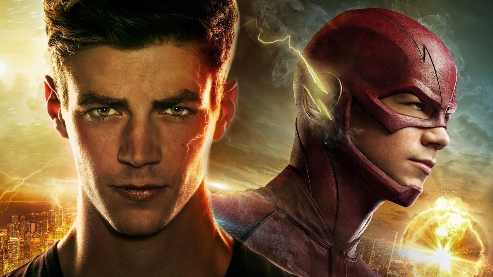
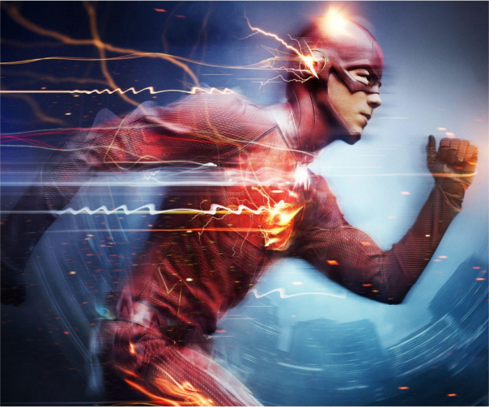

The Flash (Flash - A villám)
A The Flash, magyarul Flash - A villám a CW által alkotott Arrowverse-nek a második sorozata. Főszereplője Grant Gustin, aki Barry Allen-t , vagyis a főszereplő szélvészünket Flash-t játsza. Ő belőle egy véletlen folytán lesz szuperhős, egy villámcsapás adja neki a szupergyorsaságát. De a vilámcsapás nem csak őt ruházza fel erőkkel, így megkell küzdeni egyéb metahumánokkal. A sorozat napjainkig tart, jelenleg 2021-ben a 7.évadot láthatják a nézők. Javaslom mindenkinek, ez a sorozat elképesztő látványvilággal, CGI-al rendelkezik, emelett a történet, a szereplők is parádésak! Csak ajánlani tudom.
